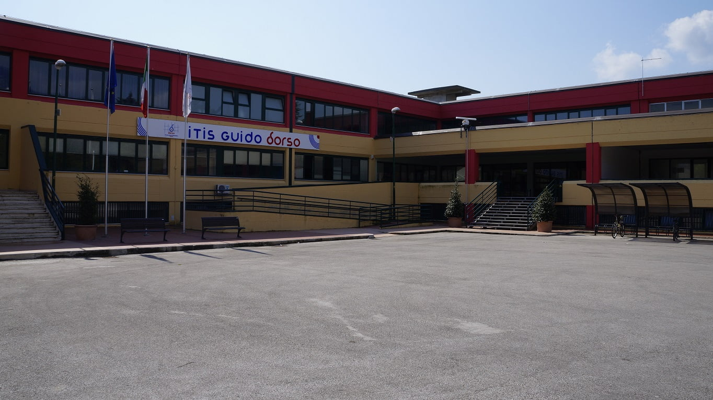

Descrizione Progetto
Questo sito è nato da un’idea della classe 3Ci per dare a tutti la possibilità di segnalare problemi della scuola in modo semplice e sicuro. È uno spazio aperto a studenti, professori e personale ATA, dove condividere difficoltà, disagi o suggerimenti per migliorare la vita scolastica.
L’obiettivo è favorire il confronto e contribuire a rendere la scuola un posto migliore per tutti, promuovendo un clima di partecipazione attiva, responsabilità e rispetto.
ITT "Guido Dorso" di Avellino
L'Istituto Tecnico Tecnologico (ITT) "Guido Dorso" rappresenta una delle realtà educative più solide della Campania. Situato nel cuore del capoluogo irpino, è un polo tecnologico all'avanguardia che dialoga costantemente con il mondo del lavoro e dell'innovazione.
